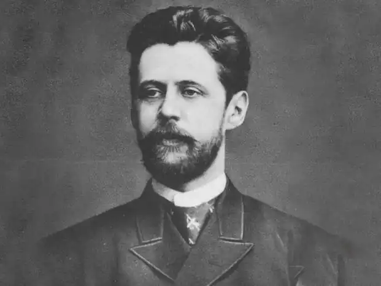
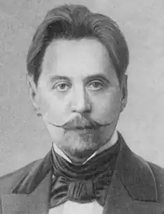
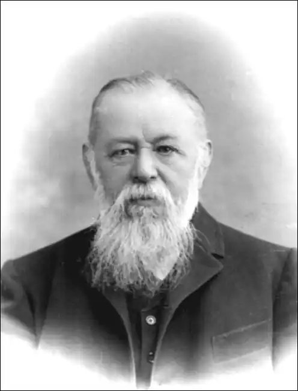

Інокентій Федорович Анненський — видатний літератор Росії, один з найяскравіших представників Срібного століття — періоду російської літератури рубежу XIX-XX століть.
Він народився 20 серпня (1 вересня) 1855 року в місті Омську, в сім'ї високопоставленого державного чиновника. Перші роки життя поета пройшли в Омську, проте в 1860 році, в результаті успішного просування глави сім'ї по службовій драбині, Анненские переїхали в Петербург.
Отримавши прекрасну домашню освіту, Інокентій Анненський вступив на історико-філологічний факультет Петербурзького університету, який закінчив у 1879 році. Цей факультет визначив майбутню долю поета — він до кінця життя служив по відомству Міністерства народної освіти. Вірші Анненський почав писати, як і більшість поетів, ще в дитинстві, але перші друковані праці з'явилися на початку 80-х роках. Він публікував рецензії на філологічні роботи, статті, есе. У 90-х роках XIX століття у журналі "Русская школа" з'явилися його "Педагогічні листи", що стали широко відомими. Там же він друкував наукові статті про Гоголя, Гончарова, Майкове. В "Журналі міністерства народної освіти" можна було знайти переклади Анненського окремих трагедій Евріпіда (всього він перевів 19 трагедій цього давньогрецького автора). Анненський також написав чотири трагедії на теми грецької міфології. Перший віршований збірник Анненського — "Тихі пісні" — вийшов досить пізно, в 1904 році, під псевдонімом "Нік. Т-про". Блискуче освічений, він поєднав у своїй поезії класичні російські традиції Пушкіна, Тютчева, Баратинським з європейською культурою. Друга збірка — "Кипарисовий скринька" — вийшов вже після смерті поета, в 1910 році. У 1923 році син поета Ст. Кривич видав третю збірку — "Посмертні вірші". Анненський довго працював директором Миколаївської чоловічої гімназії в Царському Селі, тому не дивно, що вірші його нагадують про осінньої строгості царскосельских алей. Анненський був прекрасним педагогом, надали благотворний вплив на цілу плеяду російських поетів — Анну Ахматову, Миколи Гумільова, Владислава Ходасевича і Олександра Блока. Багато з найбільших талантів Срібного століття були особисто знайомі з Анненським, оскільки навчалися в його гімназії. Серед них був і Гумільов, який зробив перші кроки в поезії саме під керівництвом Анненського. Інокентій Федорович Анненський помер у Петербурзі від інфаркту 30 листопада (13 грудня) 1909 (1910) році, похований в Царському Селі. Ахматова у своєму короткому і божественному прощальному слові сказала про нього від імені всіх, їм вихованих: "…А той, кого учителем вважаю, Як тінь пройшов і тіні не залишив, Вся отрута ввібрав всю цю одурь випив, І слави чекав, і слави не дочекався, Хто був предвестьем, предзнаменованьем, Всіх пошкодував, у всіх вдихнув утому — І задихнувся…"